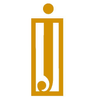

Experience

Tech Director | HackCU
Boulder, CO | August 2024 - Present
- Leading two developers to maintain and enhance hackcu.org, built with Gatsby.js (React + GraphQL) and Node.js.
- Overseeing the development of a new website for our annual hackathon in Spring, hosting 200+ participants.
- Managing project timelines using Agile and Plane.so, assigning tasks, and ensuring team alignment with key milestones.
- Collaborating with cross-functional teams to implement design and technical updates for multiple student workshops.
Technical Lead | Sugar
Boulder, CO | August 2024 - Present
- Leading a team of six to develop Sugar, an app that reduces food waste by enabling neighborhood food sharing.
- Building an MVP using React Native, including a marketplace for amateur chefs and bakers to sell homemade goods.
- Iterating on the business model and product features through Agile sprints and user feedback.

Generative AI Club | CU Boulder
Boulder, CO | February 2024 - Present
- Participating in discussions and projects around the latest advancements in generative AI technologies, including neural networks, generative models, and AI ethics.
- Collaborated on a GPT-powered chatbot project for a student community platform.
CU Game Dev & Graphics Club | CU Boulder
Boulder, CO | September 2023 - Present
- Engaging in game development and 3D graphics discussions, workshops, and projects using Unity, Blender, and OpenGL.
- Collaborating with other club members on game design ideas.

Valet & Bell | St. Julien Hotel & Spa
Boulder, CO | June 2024 - August 2024
- Provided valet and bell services, ensuring high-quality guest interactions.
- Assisted with vehicle management and luggage for luxury hotel guests.

Valet | Lone Star Valet
Dallas, TX | July 2021 - July 2022
- Managed valet parking services at multiple upscale venues in Dallas.
- Ensured smooth guest arrivals and departures while maintaining parking lot organization.

Detail | Carmel Car Wash
Frisco, TX | August 2018 - July 2021
- Worked as a detailer, specializing in the thorough cleaning and upkeep of high-end vehicles.
- Ensured customer satisfaction through attention to detail.